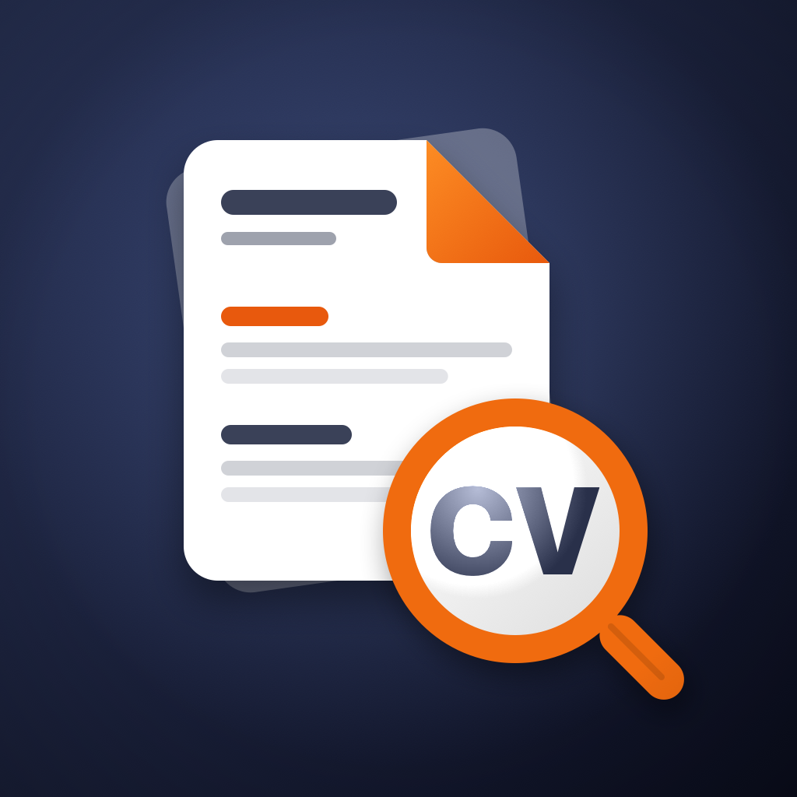

Build with evidence
Structured editing, import, ATS readiness, Recruiter Scan, Layout Studio, searchable PDF and editable DOCX export.
PRIVATE IOS CAREER WORKSPACE
Build an evidence-based résumé, tailor it for real opportunities, organise every application, prepare for interviews, and share polished documents without giving up control of your career data.

Structured editing, import, ATS readiness, Recruiter Scan, Layout Studio, searchable PDF and editable DOCX export.
Capture opportunities, connect documents and contacts, track applications, prepare interviews, compare offers, and act on Today.
On-device intelligence handles eligible lightweight work. Higher-quality connected AI powers complex tailoring, cover letters, interview plans, and Career Coach.
PRIVACY BY DESIGN